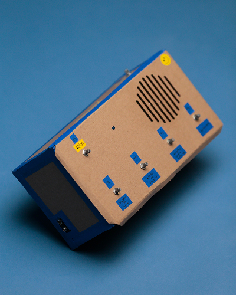
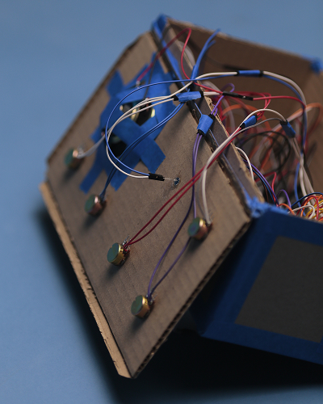
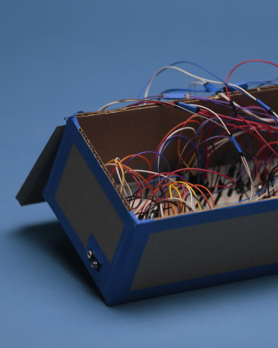
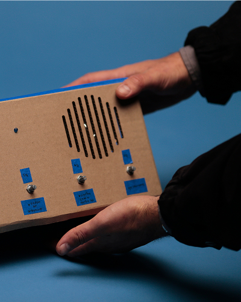

02 . Sintetizador de cuatro pasos
El tincado nace como primer proyecto integral de síntesis sonora, un secuenciador de cuatro pasos construido sobre protoboard y alojado en una carcasa híbrida de cartón. A partir del esquemático base, el proceso se centró en la calibración acústica de sus circuitos integrados y en resolver la transición física desde el prototipo abierto hacia un objeto autónomo y portátil.
Equipo: Carla Núñez, Antonia Loch, Nicolás Valdés.



